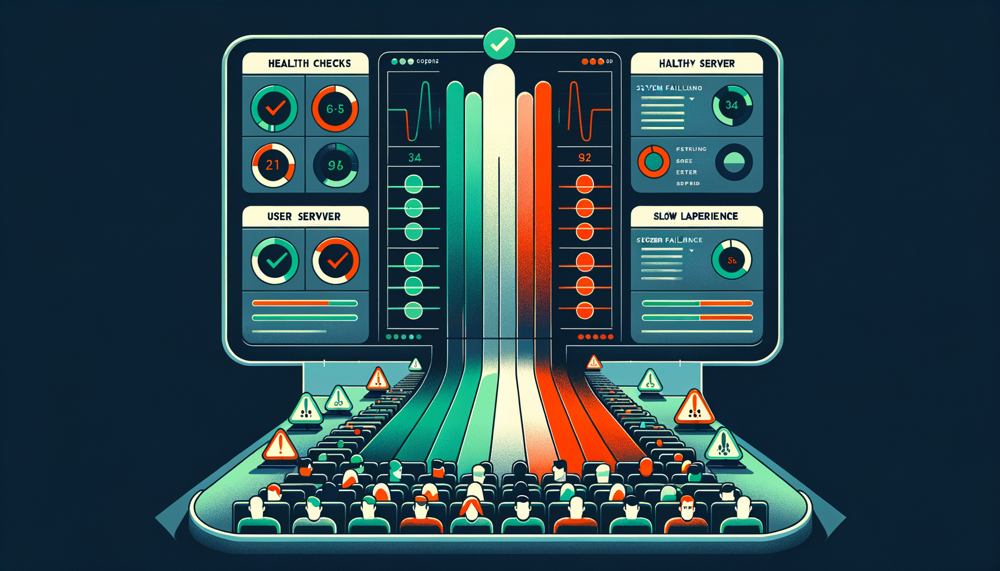
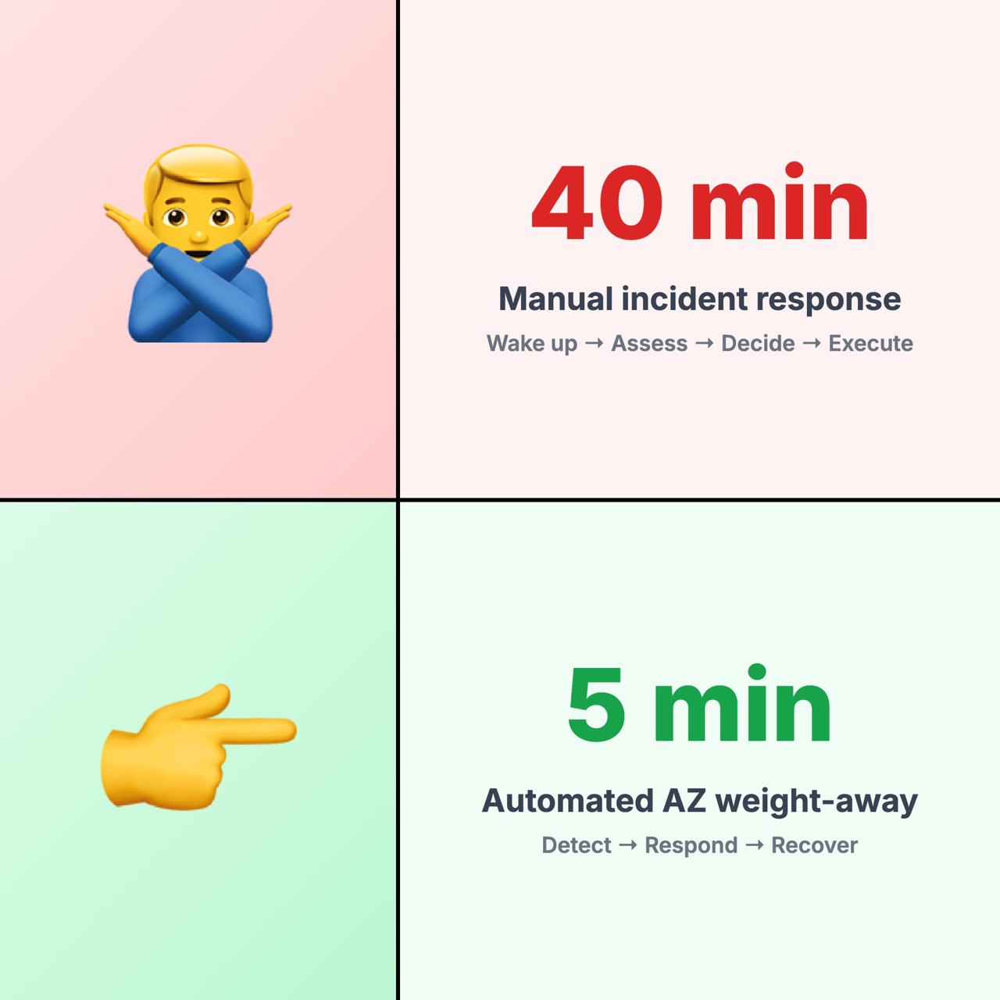

Grey Failures: The Silent Killers of Distributed Systems
Your monitoring is lying to you.
Health checks pass. Dashboards are green. Alerts are silent.
But users are still having a bad time.
Welcome to grey failures — the silent killers of distributed systems.
What Are Grey Failures?
Grey failures occur when a component is technically "alive" but not actually useful. The system is in a degraded state that traditional monitoring doesn't catch.
Grey failures happen when:
- A server is "up" but responding slowly
- Network is working but dropping 2% of packets
- CPU is fine but one core is degraded
- The instance passes health checks but fails real requests
Traditional monitoring misses these because it asks: "Is this thing alive?"
The right question: "Is this thing useful?"
Why Traditional Monitoring Fails
Most monitoring systems are binary. They check:
- Is the process running? ✓
- Is the port responding? ✓
- Does the health endpoint return 200? ✓
All green. Ship it.
But what if the process is running... slowly? What if the port responds... sometimes? What if the health check passes but actual requests fail?
This is the grey zone. Not dead, but not healthy. And your pager stays silent while users suffer.
How We Detect Grey Failures at Scale
At AWS, managing infrastructure at 1M+ instance scale, we developed patterns for catching these silent killers:
1. Multi-Signal Detection
Don't trust just the instance. Compare instance metrics + client metrics.
If clients see errors but the instance looks fine — that's your grey failure.
The instance says "I'm fine." The clients say "No, you're not." Believe the clients.
2. Latency is a Signal, Not Just Errors
Errors are obvious. Latency creep is subtle.
A p99 that slowly climbs from 100ms to 500ms over an hour is often a grey failure brewing. By the time it becomes an error, you've already lost users.
Track latency percentiles, not just averages. The average hides the pain.
3. Peer Comparison — The Outlier Test
If you have 100 instances doing the same job, they should behave similarly. When one instance starts deviating from its peers — higher latency, more errors, different resource usage — that's a grey failure signal.
The instance might pass every health check. But if it's the only one with a 200ms p99 while its siblings sit at 50ms, something's wrong.
Compare against the fleet, not against thresholds. Outliers reveal what absolutes miss.
4. Automate the Response
By the time a human notices, users have suffered for 15+ minutes.
We reduced detection time from ~40 minutes to under 4 minutes through automation. Not by making engineers faster — by removing engineers from the critical path.
From Detection to Action
Detecting grey failures is only half the battle. The real test comes at 3 AM — can you go from "something's wrong" to "problem solved" without waking up half the engineering team?
This is where most teams stumble. They build great detection, then rely on humans to respond. But humans are slow. Humans need context. Humans have to follow runbooks. By the time a human acts, users have been suffering for 30+ minutes.
Let me show you what this looked like for us — and how we fixed it.
The 40-Minute Problem
Here's what incident response looked like before:
- Alert fires (minute 0)
- On-call engineer wakes up (minute 5)
- Engineer assesses the situation (minute 15)
- Engineer decides on mitigation (minute 25)
- Engineer executes runbook (minute 35)
- System recovers (minute 40)
40 minutes. Every step was reasonable. The process was the problem.
So we asked: what if the system could decide AND act?
We built automated AZ weight-away:
- Multi-signal detection — not just one alarm
- Slow, controlled response — don't overcorrect
- Built-in safeguards — humans can still override
- Full observability — know exactly what happened and why
Result: 40 minutes → 5 minutes.
The Key Insight
Humans should design the response. Systems should execute it.
We went from "engineer follows runbook" to "engineer writes the automation that follows the runbook."
Our job isn't to be fast at 3am. Our job is to make 3am incidents boring.
Finding Grey Failures in Your System
Your system probably has grey failures right now. Here's how to find them:
- Compare server-side and client-side metrics. Discrepancies reveal grey zones.
- Track percentiles, not averages. p99 problems are invisible in p50 metrics.
- Monitor the delta. A metric that's slowly degrading is more dangerous than one that's stable (even if high).
- Ask users. Sometimes the best monitoring is a Slack channel where users complain.
Conclusion
Grey failures are inevitable in distributed systems. The question isn't whether you have them — it's whether you can detect them before your users do.
Stop asking "Is it alive?" Start asking "Is it useful?"
The difference is measured in user experience, revenue, and on-call engineer sleep.